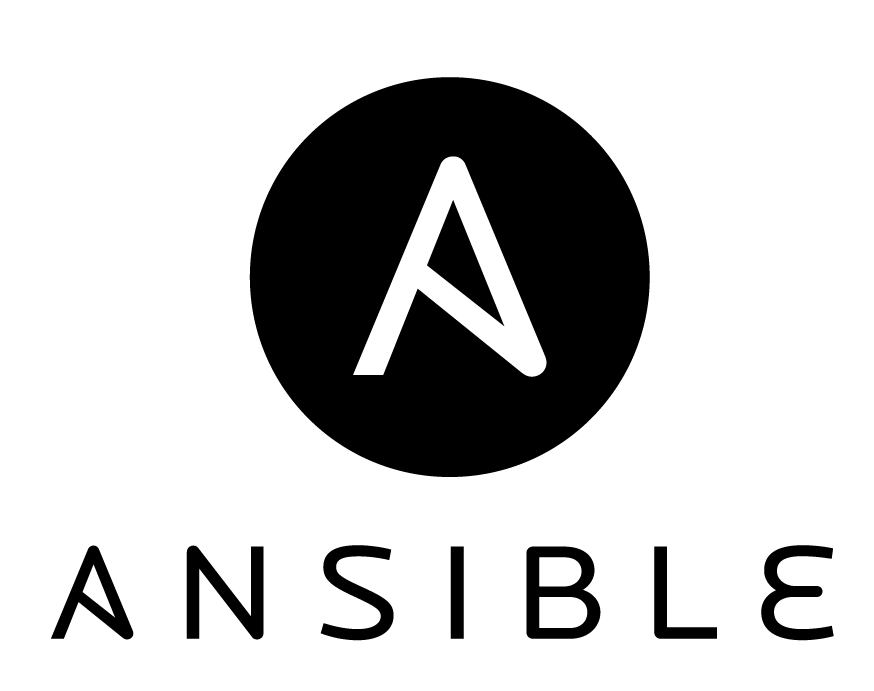

Ansible Workshop
Created by Viktor Farcic for Technology Conversations
@vfarcic
Viktor Farcic
- Software Architect at everis an NTT DATA Company
- Never developed in Fortran
- Passionate about microservices, continuous deployment and TDD
- Blogger in TechnologyConversations.com
- Java Test-Driven Development: Mastering TDD Through Katas

Configuration Management in the Docker World

|

|

|
 |
Environments
- Master server
- Cluster
- Ubuntu

Environments
Create VMs
cd ansible-workshop
cat Vagrantfile
vagrant up
vagrant ssh cd
The Project
Deploy Docker Swarm to the Cluster
- Common packages
- Consul
- Docker
- Docker Swarm
The Project
Structure
tree /vagrant/ansible/roles
cat /vagrant/ansible/hosts/prod
cat /vagrant/ansible/swarm.yml
Common Role
Task: JQ
Install the jq package
Common Role
Solution: JQ
# roles/common/tasks/main.yml
- apt:
name: jq
Common Role
Task: Run the playbook
Run the Ansible Playbook
ansible-playbook /vagrant/ansible/swarm.yml \
-i /vagrant/ansible/hosts/prod
Common Role
Test
curl https://api.github.com/repos/vfarcic/\
ansible-workshop/commits?per_page=5 \
| jq '.'
Consul Role
Task: Directories
Create the following directories:
- /data/consul/logs
- /data/consul/data
- /data/consul/config
Consul Role
Solution: Directories
# roles/consul/tasks/main.yml
- file:
path: "{{ item }}"
state: directory
with_items:
- /data/consul/logs
- /data/consul/data
- /data/consul/config
Consul Role
Task: Files
Copy the following files:
- consul > /usr/local/bin/consul (mode 0755)
- ui > /data/consul (mode 0644)
Tips:
- http://docs.ansible.com/ansible/copy_module.html
- All files are already available in roles/consul/file
Consul Role
Solution: Files
# roles/consul/tasks/main.yml
- copy:
src: "{{ item.src }}"
dest: "{{ item.dest }}"
mode: "{{ item.mode }}"
with_items:
- { src: "consul", dest: "/usr/local/bin/consul", mode: "0755" }
- { src: "ui", dest: "/data/consul", mode: "0644" }
Consul Role
Task: Run the Agent (1/2)
Run the following command:
nohup consul agent [EXTRA] \
-ui-dir /data/consul/ui \
-data-dir /data/consul/data \
-config-dir /data/consul/config \
-node=[HOST_NAME] \
-bind=[IP] \
-client=0.0.0.0 \
>/data/consul/logs/consul.log 2>&1 &
Consul Role
Task: Run the Agent (2/2)
- [EXTRA] should be replaced with -server -bootstrap-expect 1 on the main server and be empty on all others.
- [HOST_NAME] should be replaced with the name of the host.
- [IP] should be replaced with the IP of the host
Tips:
- http://docs.ansible.com/ansible/shell_module.html
- http://docs.ansible.com/ansible/intro_inventory.html
- ansible_hostname variable.
- facter_ipaddress_eth1 variable.
Consul Role
Solution: Run the Agent
# hosts/prod
[swarm]
10.100.192.200 consul_extra="-server -bootstrap-expect 1"
10.100.192.20[1:2] consul_extra=""
# roles/consul/tasks/main.yml
- shell: nohup consul agent {{ consul_extra }} \
-ui-dir /data/consul/ui \
-data-dir /data/consul/data \
-config-dir /data/consul/config \
-node={{ ansible_hostname }} \
-bind={{ facter_ipaddress_eth1 }} \
-client=0.0.0.0 \
>/data/consul/logs/consul.log 2>&1 &
Consul Role
Task: Join the Cluster
Run the following command only if NOT the main server.
consul join [IP_OF_THE_MAIN_SERVER]
- [IP_OF_THE_MAIN_SERVER] should be replaced with the IP of the main server (10.100.192.200)
Tips:
Consul Role
Solution: Join the Cluster
# hosts/prod
[swarm]
10.100.192.200
10.100.192.20[1:2] main_server_ip=10.100.192.200
# roles/consul/tasks/main.yml
- shell: consul join {{ main_server_ip }}
when: main_server_ip is defined
Common Role
Test
curl 10.100.192.200:8500/v1/catalog/nodes \
| jq '.'